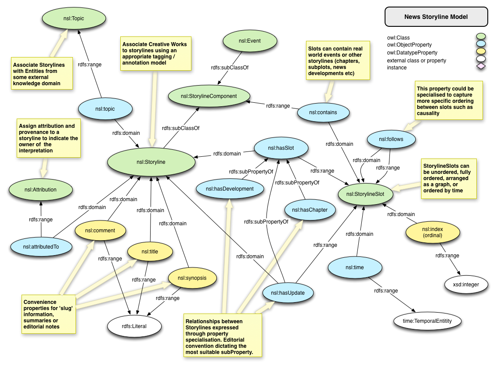
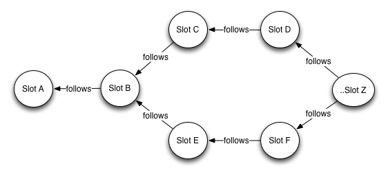

This ontology is distributed under the Creative Commons SA-3.0 license
The News Storyline Ontology is a generic model for describing and organising the stories news organisations tell. The ontology is intended to be flexible to support any given news or media publisher's approach to handling news stories. At the heart of the ontology, is the concept of Storyline. As a nuance of the English language the word 'story' has multiple meanings. In news organisations, a story can be an individual piece of content, such as an article or news report. It can also be the editorial view on events occurring in the world.
The journalist pulls together information, facts, opinion, quotes, and data to explain the significance of world events and their context to create a narrative. The event is an award being received; the story is the triumph over adversity and personal tragedy of the victor leading up to receiving the reward (and the inevitable fall from grace due to drugs and sexual peccadillos). Or, the event is a bombing outside a building; the story is an escalating civil war or a gas mains fault due to cost cutting. To avoid this confusion, the term Storyline has been used to remove the ambiguity between the piece of creative work (the written article) and the editorial perspective on events.

A Storyline in its most basic form can be an individual, but typically would consist of a richer collection of storyline components. These components exist in slots that can be fully ordered using an index property, ordered temporally, or arranged in a graph to possibly express parallel running developments.

Storyline components can be indisputable real world events, or other storylines (chapters, sub-plots, updates, news developments etc). Storylines can be associated with Topics in some knowledge domain (eg people, places, organisations).
As news stories are typically of a subjective nature (one news publisher's interpretation of any given news story may be different from another's), Storylines can be attributed to some agent to provide this provenance.
The implementation of the Attribution, Topic, and Event classes has been purposely left open so the storyline ontology can be flexibly integrated into existing wider publishing domain models without assumption.
IRI: http://purl.org/ontology/storyline/Attribution
IRI: http://purl.org/ontology/storyline/Event
A newsworthy event. An un-disputable real world event.
IRI: http://purl.org/ontology/storyline/Storyline
A news storyline.
IRI: http://purl.org/ontology/storyline/StorylineComponent
An abstract parent class of storyline components.
IRI: http://purl.org/ontology/storyline/StorylineSlot
A storyline slot, used as a container for storyline components.
IRI: http://www.w3.org/2006/time#TemporalEntity
IRI: http://purl.org/ontology/storyline/Topic
The topic of a storyline. An interface to some concept in a knowledge domain.
IRI: http://purl.org/ontology/storyline/attributedTo
Associates a storyline to its attribution. Provides for interpretation provenance through attribution
IRI: http://purl.org/ontology/storyline/contains
Associates a Slot to a StorylineComponent contained therein. Can be a news event or another storyline
IRI: http://purl.org/ontology/storyline/follows
Allows one or more slots to be sequenced. Slot A follows Slot B.
IRI: http://purl.org/ontology/storyline/hasChapter
Associates a slot to a storyline as a chapter of an existing storyline.
IRI: http://purl.org/ontology/storyline/hasDevelopment
Associates a slot to a storyline as a development of an existing storyline.
IRI: http://purl.org/ontology/storyline/hasUpdate
Associates a slot to a storyline as an update to an existing storyline.
IRI: http://purl.org/ontology/storyline/hasSlot
Associates a slot to a storyline. A storyline can have many slots
IRI: http://purl.org/ontology/storyline/time
The time of a slot. A Temporal entity, an instant or an interval. Allows slots to be ordered temporally.
IRI: http://purl.org/ontology/storyline/topic
Associates a slot to a topic
IRI: http://purl.org/ontology/storyline/index
A slot index. Allows slots to be ordered numerically
IRI: http://www.w3.org/2003/06/sw-vocab-status/ns#term_status
IRI: http://purl.org/ontology/storyline/synopsis
The synopsis of a storyline
IRI: http://purl.org/dc/elements/1.1/contributor
IRI: http://purl.org/dc/elements/1.1/description
IRI: http://www.w3.org/2002/07/owl#versionInfo
IRI: http://www.w3.org/2000/01/rdf-schema#comment
IRI: http://www.w3.org/2000/01/rdf-schema#isDefinedBy
This HTML document was obtained by processing the OWL ontology source code throughLODE, Live OWL Documentation Environment, developed bySilvio Peroni.
Attribution of a storyline used for attributing the interpretation of the storyline to some agent. An interface class, that doesn't restrict the implementation of an attribution.